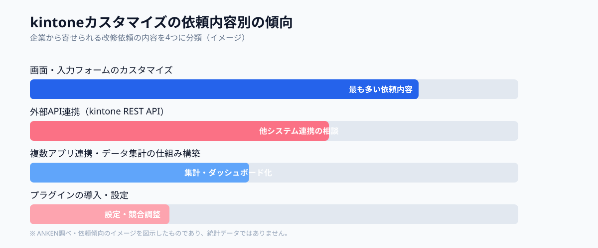
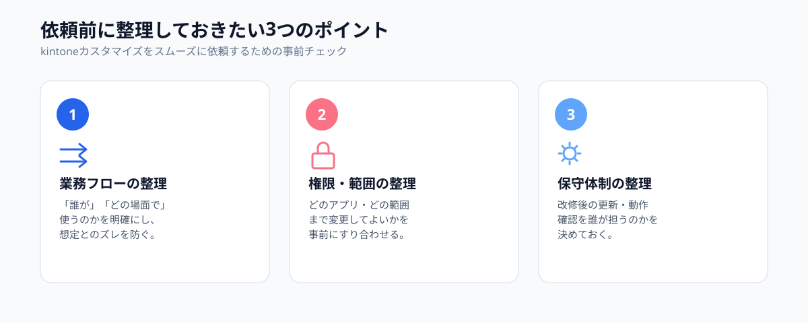

kintoneは、プログラミング知識がなくても業務アプリを組み立てられるノーコード・ローコードツールとして、多くの中小企業で導入が進んでいます。一方で、現場の細かい要望に応えようとすると、JavaScriptカスタマイズや外部システムとの連携といった、エンジニアの知識が必要な領域に踏み込むケースが少なくありません。
この記事では、kintoneカスタマイズで「内製したいけど人がいない」状態に陥りやすい理由と、情シス担当者を採用せずにスポット外注で改修を進める方法を解説します。
kintoneカスタマイズでよくある「内製したいけど人がいない」問題
kintoneの運用担当者は、情報システム部門の専任者ではなく、総務やバックオフィスの担当者が兼務しているケースが多くあります。標準機能だけで業務アプリを組み立てている間は問題になりませんが、「特定条件で自動計算したい」「他システムとデータを連携したい」といった要望が出てきた段階で、ノーコードの範囲を超えてしまいます。
結果として、「やりたいことは明確だが実装できる人が社内にいない」「外部のSI企業に相談したら見積もりだけで数週間待ちになった」という状態に陥りやすく、改修が先延ばしになったまま運用が固定化してしまうことも珍しくありません。
外注が必要になる代表的な4つの場面
kintoneカスタマイズで外注を検討することになる場面は、おおむね次の4つに分類できます。
①画面・入力フォームのカスタマイズ
JavaScriptによる自動計算、入力チェック、項目の表示・非表示の条件分岐など、標準機能では対応できない画面の挙動を実装する。
②プラグインの導入・設定
既存プラグインの組み込みや、自社の運用に合わせた設定調整。複数プラグインを併用する際の競合確認も含まれる。
③外部API連携（kintone REST API）
会計ソフト・チャットツール・社内システムなど、他のサービスとkintoneの間でデータを連携させる仕組みを構築する。
④複数アプリ連携・データ集計の仕組み構築
ルックアップや関連レコードを使った複数アプリ間の連携、集計・ダッシュボード表示の仕組みを設計・実装する。

大手SI受託とスポット外注、費用・スピードの違い
kintoneカスタマイズを外部に依頼する方法は、大きく分けて「大手SI・受託開発企業への依頼」と「スポット外注（マイクロマッチング）」の2つがあります。
大手SI・受託開発企業に依頼する場合、要件定義から見積もり調整までに数週間かかることが多く、最低契約期間や月額の保守費用が前提になっているケースもあります。小さな改修一つひとつにこのプロセスを通すのは、コスト・スピードの両面で負担になりがちです。
一方、スポット外注では改修したい内容ごとに都度依頼でき、固定費や長期契約を前提としないのが特徴です。土日や平日の空き時間で対応できるエンジニアとマッチングすることで、着手までのリードタイムを短縮しやすくなります。「画面に項目を1つ追加したい」程度の小さな改修から、スポットで相談できる点が中小企業にとって扱いやすい理由です。
スポット外注で依頼する4つのステップ
- ステップ1｜改修したい業務フロー・画面の要望を整理する
- ステップ2｜既存のkintone構成（アプリ数・連携状況）を共有できる状態にする
- ステップ3｜スポット外注でマッチングし、改修内容・範囲をすり合わせる
- ステップ4｜改修・テスト後、運用ドキュメントを残してもらう
ポイントは、ステップ1・2の「整理」を依頼前に済ませておくことです。要望や既存構成があいまいなまま依頼すると、見積もりやすり合わせに時間がかかりやすくなります。逆にここが整っていれば、スポット外注でも初回相談からスムーズに進められます。
依頼前に整理しておきたい3つのポイント

kintoneカスタマイズをスポット外注する際は、次の3点を整理しておくと依頼後のやり直しが減ります。
1つ目は、業務フローの整理です。「誰が」「どの場面で」その機能を使うのかを明確にしておくことで、実装後に「想定していた使い方と違う」というズレを防げます。
2つ目は、権限・カスタマイズ範囲の整理です。どのアプリ・どのスペースまで変更してよいのか、関係者の権限設定とあわせて事前にすり合わせておくことが重要です。
3つ目は、保守体制の整理です。改修後にkintoneのバージョンアップやプラグイン更新があった際、誰が動作確認・追加対応を行うのかを決めておくと、改修後の運用が安定します。
よくある質問
- Q. 情シス担当者がいなくてもkintone改修を依頼できますか？
- A. 依頼できます。業務フローと変更内容を伝えれば、JavaScript改修やプラグイン導入までスポット外注で対応できます。
- Q. 大手SIerに頼むのとの違いは何ですか？
- A. 大手SIerより低コスト・短納期で、小規模な改修や部分的なカスタマイズに柔軟に対応できる点が違います。
- Q. 外部API連携のような複雑な改修も頼めますか？
- A. 対応可能です。API連携やプラグイン開発の実績があるエンジニアをスポットでアサインできます。
まとめ・ANKENへのご相談
kintoneは標準機能だけで多くの業務をカバーできるツールですが、現場の細かい要望に応えるには、JavaScriptカスタマイズや外部API連携といったエンジニアの知識が必要になる場面があります。情シス担当者を新たに採用するのではなく、改修内容に応じてスポット外注で対応できるエンジニアとマッチングすることで、コストを抑えながら運用に合わせた改修を進められます。
ANKENでは、画面カスタマイズ1つから複数アプリ連携の仕組み構築まで、固定費ゼロ・週末スポットからのご相談に対応しています。
画面の小さな改修から複数アプリ連携まで、固定費ゼロ・週末スポットから依頼可能です。
👉 無料でスポット依頼を相談する初回相談は無料です。要件が固まっていなくてもOKです。